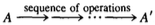
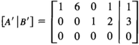

2. ROW REDUCTION
\(A = (a_{ij})\) 를 \(m \times n\) 행렬이라고 하고 미지수 \(X = (x_{ij})\) 를 \(n \times p\) 행렬이라고 하자. 그리고 아래와 같이 \(Y = (y_{ij})\) 으로 \(m \times p\) 행렬을 정의해서 이것을 X를 변수로 하는 함수라고 할 수 있다.
(2.1)
\begin{equation} Y = AX \end{equation}이러한 연산을 left multiplication by A 라고 부른다.
(2.2)
\begin{equation} y_{ij} = a_{i1}x_{1j} + \cdots + a_{in}x_{nj} \end{equation}식 (2.2) 에서 엔트리 \(y_{ij}\) 는 변수로 쓰인 행렬 X의 j번째 column 인 \(x_{1j},\cdots,x_{nj}\) 과 행렬 A의 i번째 row 에 의존적이게 된다. 따라서 이 함수에서 행렬 A는 행렬 X의 각 column 에 작용하게 되는데, 이것을 A가 column vector 들에 대한 동작을 지시한다고도 볼 수 있다.1
column vector 들에 left multiplication by A 하는 것은 n-dimensional column vector 들인 X 의 공간(space)에서 m-dimensional column vector 들인 Y의 공간(space)으로 사상되는 함수라고 생각할 수 있다. 또는 n개의 변수를 갖는 m개의 함수들의 집합으로도 볼 수 있다.
\begin{equation} y_{i} = a_{i1}x_{1} + \cdots + a_{in}x_{n} (i = 1,\cdots,m) \end{equation}위 함수들은 homogeneous 하고 linear 하기 때문에 이것을 linear transformation 이라고 부른다. (변수 \(u_{1},\cdots,u_{k}\) 들에 대한 linear 함수는 \(a_{1}u_{1} + \cdots + a_{k}u_{k} + c\) (단, \(a_{1},\cdots,a_{k},c\) 들은 scalar) 의 형태이다. 이런 함수의 상수부 c가 0일 경우 homogeneous linear 라고 부른다.)
아래 그림은 \(2 \times 2\) 행렬인 \(\begin{bmatrix} 3 & 2 \\ 1 & 4 \end{bmatrix}\) 의 연산을 그린 것이다. 2-space to 2-space 매핑이다.
다시 행렬 A에 \(n \times p\) 행렬 X를 연산하는 것으로 돌아가면, 행렬 A가 행렬 X의 각 column 에 대해 똑같이 연산된다고 해석할 수 있다. \(Y_{i}\) 를 Y의 i 번째 열(row) 이라고 하자. 그러니까 row vector 처럼 보는 것이다. 2
\begin{equation} Y = \begin{bmatrix} - & Y_{1} & - \\ - & Y_{2} & - \\ & \vdots & \\ - & Y_{p} & - \end{bmatrix} \end{equation}아래와 같이 \(Y_{i}\) 를 X 에서 \(X_{j}\) row 의 vector 표현식으로 쓸 수 있다.
(2.4)
\begin{equation} Y_{i} = a_{i1}X_{1} + \cdots + a_{in}X_{n} \end{equation}위 식은 (2.2) 를 다시 쓴 것일 뿐이다. 그리고 이건 또다른 block multiplication 의 예제이기도 하다.
\begin{equation} \begin{bmatrix} 0 & -1 & 2 \\ 3 & 4 & -6 \end{bmatrix} \begin{bmatrix} 1 & 0 \\ 4 & 2 \\ 3 & 2 \end{bmatrix} = \begin{bmatrix} 2 & 2 \\ 1 & -4 \end{bmatrix} \end{equation}위의 예에서 아래 row(2열)의 행렬곱(product) 연산은 \(3 \begin{bmatrix} 1 & 0 \end{bmatrix} + 4 \begin{bmatrix} 4 & 2 \end{bmatrix} - 6 \begin{bmatrix} 3 & 2 \end{bmatrix} = \begin{bmatrix} 1 & -4 \end{bmatrix}\) 으로 계산할 수 있다.
여기서 행렬 A가 square matrix(정사각행렬) 일 경우 left multiplication by A 를 row operation 이라고도 부른다.
한편, 아래와 같이 가장 간단한 형태의 0이 아닌 행렬을 matrix unit(s) 라고 부르고 \(e_{ij}\) 라고 표기한다.
(2.5)

행렬 \(e_{ij}\) 는 (i, j) 위치에 유일한 0이 아닌 entiry 로 1이 존재하는 행렬이다. (보통 행렬을 영문자 대문자로 표기한다. 그런데 전통적으로 matrix unit 에 대해서만은 영문자 소문자로 쓴다.) matrix unit 은 모든 행렬 \(A = (a_{ij})\) 을 아래와 같이 덧셈식(sum)으로 표현할 수 있어 유용하다.
\begin{equation} A = a_{11}e_{11} + a_{12}e_{12} + \cdots + a_{nn}e_{nn} = \sum_{i,j} a_{ij}e_{ij} \end{equation}시그마 표현식에 쓰인 i,j 인덱스는 모든 i와 j값을 취하여 합한 것을 의미한다. 아래 예를 참고하자.
\begin{equation} \begin{bmatrix} 3 & 2 \\ 1 & 4 \end{bmatrix} = \begin{bmatrix} 3 & \\ & \end{bmatrix} + \begin{bmatrix} & 2 \\ & \end{bmatrix} + \begin{bmatrix} & \\ 1 & \end{bmatrix} + \begin{bmatrix} & \\ & 4 \end{bmatrix} = 3e_{11} + 2e_{12} + 1e_{21} + 4e_{22} \end{equation}이러한 덧셈식(sum)을 \(e_{ij}\) 행렬들의 linear combination 이라고 한다.
matrix unit은 행렬끼리의 덧셈과 행렬과 scalar 곱셈의 연구에 편리하게 사용된다. 그런데 행렬 곱셈(multiplication)에는 elementary matrices (기본행렬)라고 불리우는 특정한 square matrices(정사각행렬)가 더 유용하다. elementary matrix 에는 세 가지 타입이 있다.
(2.6i)
\begin{equation} \begin{bmatrix} 1 & & & \\ & \ddots & a & \\ & & \ddots & \\ & & & 1 \end{bmatrix} \; or \; \begin{bmatrix} 1 & & & \\ & \ddots & & \\ & a & \ddots & \\ & & & 1 \end{bmatrix} = I + ae_{ij} (i \neq j) \end{equation}위의 수식은 대각선 성분들이 모두 1이고 하나의 비대각 성분을 가진 행렬이다.
(2.6ii)
\begin{equation} \begin{bmatrix} 1 & & & & & & \\ & \ddots & & & & & \\ & & 0 & & 1 & & \\ & & & \ddots & & & \\ & & 1 & & 0 & & \\ & & & & & . & \\ & & & & & & 1 \end{bmatrix} = I + e_{ij} + e_{ji} - e_{ii} - e_{jj} \end{equation}위에서는 I행렬(단위행렬)의 i번째와 j번째 대각선 entry가(성분이) 0으로 대체되고 두 개의 1이 (i, j)와 (j, i)의 위치에 더해진 것이다. (이 행렬은 수식으로 표현하면 좀 지저분해지기 때문에 이 책에서는 이에 대한 수식을 자주 쓰지는 않을 것이다.)
(2.6iii)
\begin{equation} \begin{bmatrix} 1 & & & & & & \\ & \ddots & & & & & \\ & & 1 & & & & \\ & & & c & & & \\ & & & & 1 & & \\ & & & & & \ddots & \\ & & & & & & 1 \end{bmatrix} = I + (c - 1)e_{ii} , \; (c \neq 0). \end{equation}이것은 identity matrix(단위행렬)의 diagonal entry(대각성분) 하나가 0이 아닌 숫자 c로 대체된 것이다.
\(2 \times 2\) 기본행렬은 아래와 같다.
\begin{equation} (i) \;\; \begin{bmatrix} 1 & a \\ 0 & 1 \end{bmatrix}, \begin{bmatrix} 1 & 0 \\ a & 1 \end{bmatrix}, \;\; (ii) \;\; \begin{bmatrix} 0 & 1 \\ 1 & 0 \end{bmatrix}, \;\; (iii) \;\; \begin{bmatrix} c & \\ & 1 \end{bmatrix}, \begin{bmatrix} 1 & \\ & c \end{bmatrix} \end{equation}위에서 \(a\) 는 임의의 수이고 \(c\) 는 임의의 0이 아닌 수이다.
elementary matrix(기본행렬) \(E\) 는 행렬 \(X\) 에 대해 아래와 같은 연산을 수행한다.
(2.7) 다음은 행렬 \(EX\) 를 구하기 위한 방법이다.
Type (i): i 번째 row인 \(X_{i}\) 를 \(X_{i} + aX_{j}\) 로 대체하거나 (row i)에 \(a \cdot (row \; j)\) 를 더한다.
Type (ii): (row i)와 (row j)를 서로 바꾼다.
Type (iii): (row i)에 0이 아닌 스칼라 c를 곱한다.
위의 연산들은 elementary row operations (기본행연산) 이라고 부른다. 따라서 elementary matrix와(기본행렬과) 곱하는 것은 elementary row operation(기본행연산) 과 같다. 이게 사실인지 주의깊게 확인해보자.
(2.8) Lemma. 3 elementary matrix(기본행렬) 가 invertible 하다(역행렬을 갖는다)면 이들의 inverse(역행렬) 또한 elementray matrix(기본행렬) 이다.
위의 lemma(부명제)는 계산을 통해 증명된다. elementary matrix(기본행렬)의 inverse는(역행렬은) row operation(기본행연산)의 inverse(역) 인 matrix(행렬)이다. \(E = I + ae_{ij}\) 가 Type (i) 라면, \(E^{-1} = I - ae_{ij}\), 즉 "\((row \; i)\) 에서 \(a \cdot (row \; j)\) 를 뺀 것" 이다. \(E\) 가 Type (ii) 라면 \(E^{-1} = E\) 이다. 그리고 \(E\) 가 Type (iii) 라면 \(E^{-1}\) 은 \(c\) 의 자리에 \(c^{-1}\) 이 들어간 행렬이 된다. 즉, "\((row \; i)\) 에 \(c^{-1}\) 을 곱한 것" 이 된다.
이제 (2.7) 에서의 elementary row operation (기본행연산) 들을 행렬 A에 하여 그 효과에 대해서 알아보도록 하자. 최종 연산 결과를 간단히 A' 라고 표기한다.

각각의 elementary row operation(기본행연산)은 결과적으로 elementary matrix(기본행렬)로 곱한 것으로 구해진다. 따라서 위와 같은 일련의 연산들을 elementary matrix(기본행렬)들인 \(E_{1},\cdots,E_{k}\) 의 곱으로 표현할 수 있다.
(2.9)
\begin{equation} A' = E_{k} \cdots E_{2}E_{1}A \end{equation}이러한 절차를 row reduction 혹은 Gaussian elimination (가우스 소거법) 이라고 부른다. 예를 들어 아래 matrix를(행렬을) 단순화 시켜보자.
(2.10)
\begin{equation} M = \begin{bmatrix} 1 & 0 & 2 & 1 & 5 \\ 1 & 1 & 5 & 2 & 7 \\ 1 & 2 & 8 & 4 & 12 \end{bmatrix} \end{equation}첫 번째 타입의 elementary operation(기본행연산)을 가능한 많이 사용하여 깔끔하게(단위행렬 처럼 보이게) 만들어보자.
row reduction은 systems of linear equation(연립일차방정식)을 푸는 유용한 방법이다. m개의 방정식과 n개의 미지수를 가지고 있다고 하고 (1.9) 에서와 같이 \(m \times n\) 행렬인 A와 미지의 column vector 행렬인 X, 그리고 주어진 column vector인 B에 대하여 \(AX = B\) 이라고 하자. 이 연립방정식을 풀기 위해서 \(m \times (n + 1)\) 의 block matrix를 만들어 보자.
(2.11)
그리고 row operation들을 하여 M을 단순화시켜 보자. \(EM = [EA \; | \; EB]\) 라는 것을 염두해두자. 그리고 M'를 아래와 같이 정의하여 일련의 row operation들의 결과라고 하자.
\begin{equation} M' = [A' \; | \; B'] \end{equation}그리고 아래 내용을 주의깊게 관찰한다.
(2.12) *Proposition.*4 \(A'X = B'\) 의 해는 \(AX = B\) 와 같다.
Proof. M' 는 아래와 같이 일련의 elementary row operation 들로 얻어질 수기 때문임.
\begin{equation} M' = E_{r} \cdots E_{1}M \end{equation}행렬 P를 \(P = E_{r} \cdots E_{1}\) 이라고 하자. Lemma (2.8) 과 Proposition (1.18) 에 의해 P는 invertible 하다. 그리고 \(M' = [A' | B'] = [PA | PB]\) 이다. X 가 원래의 식인 \(AX = B\) 의 해라고 하면 \(PAX = PB\) 가 되고, 이것은 \(A'X = B'\) 라고 할 수 있다.5 따라서 X 는 새 방정식의 해가 된다. 이걸 역으로 만일 \(A'X = B'\) 라면, \(AX = P^{-1}A'X = P^{-1}B' = B\) 가 되서 X가 역시 \(AX = B\) 방정식을 풀 수 있다.
아래 연립 방정식을 예로 들어보자.
(2.13)
\begin{equation} \begin{array} 1x_{1} + + 2x_{3} + x_{4} = 5 \\ x_{1} + x_{2} + 5x_{3} + 2x_{4} = 7 \\ x_{1} + 2x_{2} + 8x_{3} + 4x_{4} = 12 \end{array} \end{equation}위 연립 방정식의 augmented matrix 를 (2.10) 에서와 같이 행렬 M 이라고 하자. 이 행렬에 row reduction 을 하면 아래의 연립 방정식을 얻을 수 있다.
\begin{equation} \begin{array} 1x_{1} + & & 2x_{3} & & = & 2 \\ & x_{2} + & 3x_{3} & & = & -1 \\ & & & x_{4} & = & 3 \end{array} \end{equation}위의 연립방정식의 해는 바로 알 수 있다. \(x_{3}\) 을 임의의 수로 두면 \(x_{1}, x_{2}, x_{4}\) 를 풀 수 있다. 따라서 (2.13) 의 general solution 은 아래와 같이 쓸 수 있다.
\begin{equation} x_{3} = c_{3}, x_{1} = 1 - 2c_{3}, x_{2} = -1 - 3c_{3}, x_{4} = 3 \end{equation}이고 \(c_{3}\) 은 임의의 수이다.
이제 다시 임의의 행렬에 row reduction 을 하는 것으로 돌아가자. 별로 어려워 보이지는 않을 것이다. 행렬 A에 일련의 row operation 을 하여 대충 아래와 같은 형태로 소거하는 것이다.
(2.14)
* 은 임의의 수를 나타내고 빈 공간은 0 들로 채워진 것을
의미한다. 이러한 행렬을 row echelon matrix 6 라고 한다. 예를
들면 아래 행렬은 row echelon matrix 이다.
이것은 또한 (2.10) 에서의 최종 결과와 같은 형태이다. (2.15) 에서 row echelon matrix 의 정의를 내린다.
(2.15)
- 매 row 에서 첫 번째 0이 아닌 엔트리는 1 이다. 이 엔트리를 pivot 이라 부른다.
- i + 1 row의 첫 번째 0이 아닌 엔트리는 i row의 첫 번째 0이 아닌 엔트리의 오른쪽에 위치해야 한다.
- pivot 위의 엔트리들은 모두 0이다.
row reduction 을 하기 위해서는 우선 0이 아닌 엔트리를 가진 첫 번째 column 을 찾아야 한다. (이런 column 이 없다면 A = 0 이고 row echelon matrix 는 0 이 된다.) Type (ii) 의 elementary operation 을 이용하여 row 를 서로 교환해서 0이 아닌 엔트리를 제일 위의 row 로 옮긴다. 이 엔트리를 Type (iii) 의 elementary operation 을 사용하여 1로 정규화한다. 그리고 Type (i) 의 elementray operation 으로 해당 column 의 다른 엔트리들을 정리한다. 그러면 아래와 같은 블록을 가진 행렬이 완성될 것이다.
이제 계속해서 더 작은 행렬인 D에 row operation 을 수행한다(다 될때까지 계속한다). Formally, this is induction on the size of the matrix. 7 완전한 귀납법[Appendix (2.6) 참고]에서는 A 보다 적은 row 를 가진 모든 행렬이 row echelon form 으로 소거될 수 있다고 가정한다. D가 A보다 적은 수의 row 를 가지므로 이것은 row echelon matrix(\(D''\) 라고 하자) 로 소거될 수 있다고 가정할 수 있다. \(D\) 를 \(D''\) 로 소거하는 row reduction 은 \(A'\) 를 이루고 있는 다른 블록에 수정을 가하지 않는다. 따라서 \(A'\) 는 아래와 같이 소거될 수 있다.
이 행렬은 row echelon matrix 의 요구사항(2.15a 와 b)을 만족한다. 그러므로 원본 행렬인 A는 이와 같은 형태로 소거될 수 있다. 이 상태에서 \(D''\) 의 pivot 위의 B의 엔트리들은 제거될 수 있다. 여기까지 하면 row echelon form 으로의 소거가 완료된다.
행렬 A에서 row reduction 을 통해 얻은 row echelon matrix 는 유일하다는 것을 알 수 있다. 즉, row operation 은 순서에 영향을 받지 않는다. 이건 크게 중요한게 아니어서 증명은 생략한다.
row reduction 이 유용한 까닭은 \(A'\) 가 row echelon form 이라면 \(A'X = B'\) 의 연립방정식을 즉시 풀 수 있기 때문이다. 아래 예를 살펴보자.
위에서 \(A'X = B'\) 는 해가 없다. 왜냐하면 세 번째 방정식이 \(0 = 1\) 이기 때문이다.

반면에 위의 예제는 해가 존재한다. \(x_{2}\) 와 \(x_{4}\) 를 임의로 두면 첫 번째 방정식은 \(x_{1}\) 을 구할 수 있고, 두 번째 방정식으로 \(x_{3}\) 을 구할 수 있다. (2.13) 의 연립방정식을 풀 때의 방법과 동일하다.
일반적인 룰은 아래와 같다.
(2.16) Proposition. \(M' = [A' | B']\) 가 row echelon matrix 라고 하자. 그러면 \(A'X = B'\) 에서 나타내는 연립방정식은 오직 \(B'\) 의 마지막 colomn 에서 pivot 이 없을 경우에만 해를 갖는다.8 그리고 만일 column i 상에 pivot 이 없다면 임의의 값이 미지수 \(x_{i}\) 에 할당될 수 있다.
물론 모든 homogeneous linear system \(AX = 0\) 에는 trivial solution(자명한 해)인 \(X = 0\) 가 존재한다. 그러나 row echelon form 을 다시 살펴보면, 만일 방정식의 개수보다 미지수가 더 많은 경우 homogeneous 방정식인 \(AX = 0\) 는 X에 대해 non-trivial 해를 갖게 된다.
(2.17) Corollary. 9 m 개의 homogeneous equation 과 n 개의 미지수를 가지고 있고, m < n 인 \(AX = 0\) 의 모든 연립방정식은 몇 개의 \(x_{i}\) 가 0이 아닌 해 X를 갖는다.
\(A'X = 0\) 을 associated row echelon equation 이라고 하자. 그리고 r을 \(A'\) 의 pivot 의 개수라고 하자. 그러면 \(r \leq m\) 이다. 명제에 따르면 n - r 개의 임의의 변수를 \(x_{i}\) 에 할당할 수 있다.
이제 row reduction 을 사용하여 square invertible matrix 들의 특징을 알아보자.
(2.18) Proposition. A를 정사각행렬이라고 하자. 아래 조건들은 동등하다.
- A는 일련의 elementary row operation 들로 소거해서 단위행렬이 될 수 있다.
- A는 elementary matrix 들의 곱(product)이다.
- A는 역행렬을 갖는다(invertible).
- \(AX = 0\) 이 나타내는 homogeneous 연립방정식은 오로지 \(X = 0\) 인 자명한 해를 갖는다.
Proof. 우리는 이 명제를 (1)=>(2)=>(3)=>(4)=>(1) 이런 식의 함축(implication)10을 사용하여 증명하고자 한다. (1) 이면 (2) 라는 것을 알아보기 위해 A가 row operation 들로 소거되어 단위행렬이 될 수 있다고 해 보자. \(E_{k} \cdots E_{1}A = I\) 에서 양 변의 왼쪽에 \(E_{1}^{-1} \cdots E_{k}^{-1}\) 를 곱하면 \(A = E_{1}^{-1} \cdots E_{k}^{-1}\) 를 얻게된다. elementary matrix 의 역행렬(inverse)은 역시 elementary matrix 이므로, A는 elementary matrix 들의 곱으로 이루어져 있다는 것을 알 수 있다. elementary matrix 들의 곱 역시 역행렬을 가지므로(invertible) (2) 이면 (3) 이다. 만일 A가 역행렬을 가진다면(invertible) \(AX = 0\) 의 양 변에 \(A^{-1}\) 을 곱해서 \(X = 0\) 을 이끌어낼 수 있다. 따라서 \(AX = 0\) 이 trivial solution(자명한 해)을 가지며 이것은 (3) 이면 (4) 라는 것을 이끌어낸다.
마지막 implication 인 (4) 이면 (1) 을 중명하기 위해 square row echelon matrix 인 M을 사용한다. 그리고 아래의 이분법(dichotomy)를 살펴보자.
(2.19)
M을 square row echelon matrix 라고 하자.
그러면 M은 단위행렬 이거나 가장 아래 row 가 0 이게 된다.
이것은 (2.15) 를 떠올려 보면 쉽게 이해할 수 있다.
주어진 행렬 A가 (1)을 만족하지 않는다고 해 보자. 그러면 A는 row operation 들을 사용하여 최하단의 row 가 0인 행렬 A' 로 소거된다. 이 경우 \(A'X = 0\) 에 대해서 최대 n-1 개의 nontrivial equation 이 존재하게 된다. 그리고 따름정리(corollary) (2.17) 을 통해 이 연립방정식은 nontrivial solution 을 갖는다는 것을 알 수 있다. \(AX = 0\) 이 \(A'X = 0\) 과 동등하기 때문에 이 또한 nontrivial solution 이다. 이것은 (1) 이 아니면 (4) 도 아니라는 것을 나타낸다. 따라서 (4) 이면 (1) 이다. 이로써 (2.18) 의 명제가 증명된다.
(2.20) Corllary. 정사각행렬 A에서 하나의 row 가 0이라면 A는 역행렬을 갖지 않는다.
row reduction 은 invertible matrix A 의 역행렬을 구하는 방법이 될 수 있다. 아래와 같이 row operation 들을 사용하여 A를 단위행렬로 만들어보자.
\begin{equation} E_{k} \cdots E_{1}A = I \end{equation}위 식의 양 변에 \(A^{-1}\) 을 곱한다.
\begin{equation} E_{k} \cdots E_{1}I = A^{-1} \end{equation}(2.21) Corollary. A를 invertible matrix 라고 하자. 역행렬인 \(A^{-1}\) 을 구하기 위해 elementary row operation 들인 \(E_{1},\cdots,E_{k}\) 를 A에 적용하여 단위행렬로 만든다. 동일한 순서의 오퍼레이션을 \(I\) 에 적용하면 \(A^{-1}\) 을 얻게된다.
이 따름정리(corollary)는 위의 두 방정식에서 정리한 것이다.
(2.22) Example. 아래 행렬의 역행렬을 구해보자.
\begin{equation} A = \begin{bmatrix} 5 & 4 \\ 6 & 5 \end{bmatrix} \end{equation}이를 \(2 \times 4\) 블록 매트릭스로 만들어보자.
행렬 A를 단위행렬로 만들기위해 row operation 들을 수행할 것이다. 따름정리 (2.21)에 의해 우변이 \(A^{-1}\) 로 바뀌는 것을 잘 살펴보자.
따라서 \(A^{-1} = \begin{bmatrix} 5 & -4 \\ -6 & 5 \end{bmatrix}\) 이다.
(2.23) Proposition. 정사각행렬 A가 \(BA = I\) 와 같이 left inverse 인 B를 갖거나 또는 \(AB = I\) 와 같이 right inverse B를 갖는다고 해 보자. 그러면 A는 역행렬을 갖고 B는 A의 역행렬이다.
Proof. \(AB = I\) 라고 가정해보자. 그리고 A에 row reduction 을 수행해보자. (2.19) 에 의하면 \(E_{1},\cdots,E_{k}\) 는 elementary matrix 들이다. 따라서 \(A' = E_{1},\cdots,E_{k}A\) 은 단위행렬이거나 최하단에 zero row를 가진 행렬일 것이다. 그러면 \(A'B = E_{k} \cdots E_{1}\) 이고 이것은 invertible matrix 이다. 따라서 \(A'B\) 의 최하단 row는 0이 아니다. 이는 \(A'\) 또한 최하단 row가 0이 아님을 나타낸다. (2.18)에 의해서 행렬 A는 역행렬을 갖는다. 그리고 \(I = E_{k} \cdots E_{1}A\) 와 \(AB = I\) 는 \(A^{-1} = E_{k} \cdots E_{1} = B\) 임을 나타낸다(1.17 참고). 다른 케이스는 \(BA = I\) 인데, 위에서 정리한 내용의 A와 B를 바꾸어 대입하면 B가 역행렬을 갖고 A가 B의 역행렬이게 된다. 따라서 A 또한 역행렬을 갖는다.
지금까지 논의해온 내용을 row가 아니라 column에 적용할 수 있다. 우리는 그동안 연립일차방정식에 적용하기위해 row에 대해서 다루고 있었다. 그렇지 않았다면 column 에도 똑같이 적용할 수 있었다. row와 column은 행렬 전치(matrix transpose)를 통해 서로 뒤바뀔 수 있다. \(m \times n\) 행렬 A의 전치행렬(transpose)은 대각선 방향으로 서로 뒤바뀌어서 \(n \times m\) 행렬 \(A^{t}\) 가 된다. 즉, 아래와 같은 조건에서 \(A^{t} = (B_{ij})\) 이다.
\begin{equation} b_{ij} = a_{ji} \end{equation}아래 예를 참고하자.
\begin{equation} \begin{bmatrix} 3 & 2 \\ 1 & 4 \end{bmatrix}^{t} = \begin{bmatrix} 3 & 1 \\ 2 & 4 \end{bmatrix} \end{equation}and
\begin{bmatrix} 1 & 2 & 3 \end{bmatrix}^{t} = \begin{bmatrix} 1 \\ 2 \\ 3 \end{bmatrix}전치행렬의 연산 규칙은 아래 (2.24) 와 같다.
(2.24)
- \((A + B)^{t} = A^{t} + B^{t}\)
- \((cA)^{t} = cA^{t}\)
- \((AB)^{t} = B^{t}A^{t}\)
- \((A^{t})^{t} = A\)
2.24_3 과 2.24_4 의 공식을 사용하면 left multiplication 으로부터 right multiplication 을 만들어낼 수 있다.11
(2.6) 의 elementary matrix 들은 아래 elementary column operation 들을 통해 right multiplication 으로 연산될 수 있다.
(2.25)
- \((column \; j)\) 에 \(a \cdot (column \; i)\) 를 더한다.
- \((column \; i)\) 와 \((column \; j)\) 를 서로 교환한다.
- \((column \; i)\) 에 0이 아닌 상수 c를 곱한다.
Footnotes:
we can understand the way A operates by considering its action on column vectors.
그림에서 행렬 Y의 row vector를 \(Y_{p}\) 까지 그렸는데, 앞에서 예로 든 내용을 보면 행렬 Y는 \(m \times p\) 행렬이다. \(Y_{m}\) 의 오타이지 않을까 싶다.
부명제. 다른 진술이 참임을 검증하기 위해 참인 것으로 여겨지는 진술.
명제(命題). 논리학적으로 뜻이 분명한 문장. 즉, 어떤 말을 딱 본 순간 '참' 혹은 '거짓'을 대번에 알 수 있는 말을 말한다.
\(PA = A'\), \(PB = B'\) 이기 때문.
echelon: 계급, (공군에서 항공기의) 사다리꼴 편대. 여기서는 후자의 뜻인 듯.
해석 안됨.
B' 행렬은 최우측에 위치한 column 벡터이다. 여기에 pivot 값이 있다는 것은 \(0 = 1\) 이라는 뜻이므로 당연히 전체 연립방정식에서는 해가 없게 된다.
따름정리. 계(系) 라고도 한다. 1개의 정리에서 바로 유도되는 사실로서 이용가치가 많은 것을 명제의 꼴로 나타낸 것을 원래의 정리의 따름정리 또는 계라 한다.
we can deduce facts about right multiplication, XP, from the corresponding facts about left multiplication.